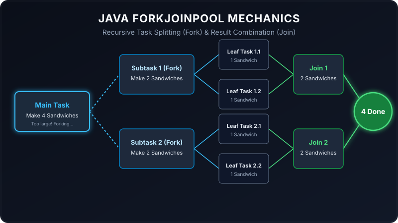

In modern software development, computers come equipped with multi-core processors. However, writing programs that efficiently utilize all these cores at the same time can be incredibly challenging. That is where Java's ForkJoinPool framework comes in. It helps us break down a large, slow task into smaller, faster tasks that run in parallel across multiple processor cores.
But how does it work under the hood, and what do fork and join actually mean? Let's translate these technical concepts into plain English using a simple kitchen analogy.

Imagine you run a catering business and receive a massive order for 1,000 sandwiches. If you (the main chef) try to make all 1,000 sandwiches by yourself, you will get exhausted and it will take all day. Instead, you decide to delegate. You check your rulebook: "If the order is larger than 16 sandwiches, split the order and pass it to helper chefs."
Since 1,000 is way larger than 16, you split the order in half: 500 sandwiches go to Chef A, and 500 go to Chef B (this is Forking). Chef A and Chef B look at their 500-sandwich orders, see they are still larger than 16, and split them again (250 each). This splitting continues until a chef is handed 16 or fewer sandwiches. At that point, the chef says, "I can do this myself!" and makes them.
Once all the helper chefs finish their small batches, they bring their trays back to the main table and combine them (this is Joining). In the end, you get your 1,000 sandwiches done in record time by working together!
How This Looks in Java Code
In Java, we can implement this exact logic by extending the RecursiveTask class. The compute() method contains our logic for deciding when to split (fork) the work and when to do the work ourselves.
package io.practise.threads;
import java.util.concurrent.RecursiveTask;
public class ForkJoinPoolTest extends RecursiveTask<Long> {
private long number = 0;
public ForkJoinPoolTest(long number) {
this.number = number;
}
@Override
protected Long compute() {
// If workload is above our threshold (16), break it into smaller subtasks
if (this.number > 16) {
System.out.println("Splitting workload: " + this.number);
long firstNumber = this.number / 2;
long secondNumber = this.number - firstNumber;
// Create helper subtasks
ForkJoinPoolTest subtask1 = new ForkJoinPoolTest(firstNumber);
ForkJoinPoolTest subtask2 = new ForkJoinPoolTest(secondNumber);
// Fork: Run these tasks asynchronously in the background
subtask1.fork();
subtask2.fork();
// Join: Wait for subtasks to finish and collect their results
long result = 0;
result += subtask1.join();
result += subtask2.join();
return result;
} else {
// Threshold met: do the work directly
System.out.println("Doing workload myself: " + this.number);
return number * 3;
}
}
}Breaking Down the Key Concepts
Let's map our sandwich catering analogy directly to the core parts of the Java code:
- RecursiveTask<Long>: A task that returns a value (in this case, a
Longnumber). Think of this as the order ticket that must produce a result (the finished sandwiches). - Threshold (this.number > 16): The maximum amount of work one chef is allowed to do alone before they must split it.
- fork(): Sending a subtask to the ForkJoinPool queue so another thread (helper chef) can pick it up and run it.
- join(): Waiting for a subtask to finish execution and returning its computed value.
ForkJoinPool implements a brilliant algorithm called Work-Stealing. Imagine Chef A finishes their pile of sandwiches early, while Chef B is still struggling with a large queue. Instead of standing around idle, Chef A will automatically go over and "steal" some work from the back of Chef B's queue. This ensures all processor cores stay busy and no resource goes to waste!
Conclusion
The Fork-Join framework is an incredibly powerful tool in Java for divide-and-conquer style parallel processing. By automatically handling thread management and utilizing work-stealing, it takes the pain out of multi-core optimization, allowing you to write highly performant, scalable applications with clean recursive logic.